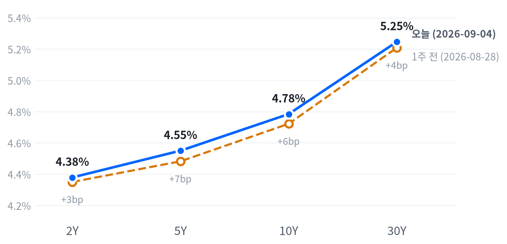

8월 비농업 고용이 시장 예상을 크게 웃돌면서(다우존스 컨센서스 대비 세 배 이상) 국채금리가 전 구간에서 뛰었고, 3대 지수는 발표 직후 낙폭을 키워 다우가 가장 크게 밀렸습니다. 러셀2000만 나 홀로 플러스로 마감했습니다.
마벨·코히런트 등 AI 반도체와 마이크론·웨스턴디지털 등 메모리주가 동시에 급등하며 지수 하락폭의 상당 부분을 상쇄했습니다. 금리에 예민한 자산일수록 흔들림이 컸던 하루였고, 포트폴리오는 채권 듀레이션 축소·달러 소폭 매도 포지션은 유지하되 메모리는 비중을 늘립니다.
8월 고용보고서가 컨센서스를 크게 웃돌면서(비농업 고용 +16만2천 명) 국채금리가 전 구간에서 오르고 3대 지수가 동반 하락했습니다. 반면 메모리·AI 인프라주는 개별 재료에 힘입어 지수와 반대로 급등했습니다.
고용 서프라이즈는 9월 FOMC의 인상 경로를 지지하는 재료로 즉각 해석돼 단기물 금리를 가장 크게 밀어올렸습니다. 이는 밸류에이션 부담이 큰 성장주보다 금리에 덜 예민한 소형주·메모리 테마에 상대적으로 유리한 구도를 만들었습니다.
오늘은 메모리 비중을 2~6주 시계로 확대하고 나머지 포지션은 다음 세션까지 그대로 유지합니다. 메모리 바스켓의 20일 초과수익이 트리거를 충족해 중립에서 비중확대로 옮기는 것 외에는 채권 듀레이션 축소·달러 소폭 매도 등 기존 구도를 그대로 가져갑니다.
이 판단은 다음 주 발표될 8월 CPI가 물가 재가속을 확인시키거나, 메모리 20일 초과수익이 다시 0%포인트 아래로 반전하면 무효화됩니다.
글로벌 흐름. 유럽은 미국과 엇갈렸습니다 — 어제(9월3일) 유럽 3대 지수는 평균 0.55% 올랐지만 오늘 미국 지수는 하락해 방향이 갈렸습니다. DAX·FTSE100·유로스톡스50 세 지수는 모두 같은 방향(플러스)으로 움직여 지역 내부는 갈리지 않았습니다. 아시아는 닛케이(-0.17%)·항셍(-0.39%)·상하이종합(+0.02%)이 평균 -0.18%로 미국과 같은 하락 방향을 이어갔습니다.
| 지수 | 종가 | 등락률 | 기준일 |
|---|---|---|---|
| 닛케이225 | 64,214.48 | -0.17% | 9/3 |
| 항셍 | 25,213.31 | -0.39% | 9/3 |
| 상하이종합 | 3,942.09 | +0.02% | 9/3 |
| DAX | 26,003.32 | +0.63% | 9/3 |
| FTSE100 | 10,831.50 | +0.70% | 9/3 |
| 유로스톡스50 | 6,382.59 | +0.32% | 9/3 |
| VIX | 14.53 | +1.47% | 9/4 |
야간 선물. S&P500 선물(ES)은 새벽 1시(ET) 7,764 부근에서 고점을 찍은 뒤 미끄러졌습니다. 오전 8시30분에는 7,731까지 밀렸는데(야간 변동폭 0.43%), 공교롭게도 이 시각이 고용보고서 발표 시각과 정확히 겹치는군요. 나스닥 선물(NQ)도 새벽 6시30분 고점 이후 저녁까지 밀려 변동폭이 0.75%로 더 컸습니다. 현물 갭은 S&P500 +0.03%, 나스닥 0.00%, 러셀2000 -0.39%로 사실상 보합 출발이었습니다.
마감 위치. S&P500과 나스닥은 장중 고저 대비 종가 위치가 각각 27·33으로 중단에서 마감했고, 러셀2000만 95로 장중 고점 부근에서 마감했습니다. 이 경계는 최근 2,262거래일 이력에서 다시 잰 값으로, 상위 84.7 이상을 고점권, 하위 25.1 이하를 저점권으로 삼는군요. 대형 지수 둘이 중단에 머문 것은 오전에 판 물량을 오후에 되사들이긴 했어도 장중 고점을 다시 회복할 힘은 없었다는 뜻입니다. 러셀2000만 고점권에 붙었다는 것은, 오늘 하루만큼은 금리 충격이 소형주보다 대형·성장주에 더 아프게 들어왔다는 신호로 읽을 수 있습니다.
무엇이 움직였나. 이날 지수를 움직인 가장 큰 변수는 8시30분 발표된 고용보고서였습니다. 개장 직후 고점을 찍은 지수들이 발표 충격을 소화하며 오전 내내 미끄러졌고, 오후 들어 낙폭을 일부 되돌렸습니다. 같은 시각 국채금리가 전 구간에서 튀어 오른 것이 주가의 하락 전환과 정확히 맞물렸다는 점에서, 이번에도 금리가 주가를 끌어내린 하루로 보이는군요. AI 반도체·메모리 개별 종목의 급등이 지수 하락폭을 상쇄한 것도 이날의 특징이었고, 시간외 거래에서 지수 관련 새로운 재료는 확인되지 않았습니다.
변동성 지수 VIX는 14.53으로 하루 +1.47% 올랐지만 절대 수준 자체는 여전히 낮은 구간입니다. 지수가 발표 직후 흔들렸는데도 VIX가 크게 뛰지 않았다는 것은, 오늘 하락을 시장이 "위험자산을 전면적으로 던지는 신호"보다는 "정책금리 재산정에 따른 국지적 조정"으로 받아들였다는 뜻으로 볼 수 있습니다.
S&P500은 7,719로 마감해 최근 2년(504거래일) 가운데 이보다 높았던 날이 11일뿐인 자리를 지키고 있습니다. 나스닥(20일뿐)과 러셀2000(34일뿐)도 비슷하게 최고치 구간에 머물러 있고, 변동성 지수 VIX는 14.53으로 오히려 이보다 낮았던 날이 31일뿐인 낮은 구간입니다. 오늘 하락폭 자체는 평소 하루 움직임의 절반에도 못 미쳐(S&P500 기준 0.47배) 자리를 흔들 정도는 아니었습니다.
장중으로 보면 S&P500은 개장 직후 고점(7,750)을 찍은 뒤 미끄러져 오전 11시반 저점(7,706)까지 밀렸습니다. 이후 낙폭 일부를 되돌리며 마감했습니다.
나스닥도 같은 흐름으로 개장 직후 고점(26,626) 이후 오후 1시30분 저점(26,445, -0.53%)까지 내렸다가 반등해 마감했습니다. 러셀2000은 반대로 개장 직후 저점(2,951)을 찍고 오후 내내 올라 3시30분 장중 고점(2,977, +0.67%)에 가까운 채 마감해, 6개 지수 중 유일하게 플러스로 끝났습니다.
오늘 지수 하락의 대부분은 개별 섹터 쏠림에서 나왔습니다. 기술 섹터의 지수 기여도는 +0.24%포인트로 유일하게 뚜렷한 플러스였네요. 커뮤니케이션서비스(-0.17%포인트)·임의소비재(-0.17%포인트)를 포함해 대다수 섹터는 마이너스로 기여했습니다. 소재·부동산을 포함해 이 아홉 섹터로 설명되지 않는 몫은 0.08%포인트로 크지 않습니다.
앞서 마감 위치에서 봤듯 러셀2000만 장중 고점 부근에서 끝났습니다. 참여도 지표 자체는 오늘 뚜렷한 방향을 가리키지 않아, 소형주 반등이 하루짜리 반사매매인지 추세 전환인지는 다음 세션을 더 봐야 합니다.
스타일 사이에서도 방향이 갈렸습니다. S&P500 그로스는 -0.14% 내려 S&P500 밸류(-0.66%)보다 하락폭이 훨씬 작았는데, 이는 금리 급등에 통상 더 아파야 할 성장주가 오히려 견조했다는 뜻입니다. 기술 섹터에 AI 반도체·메모리 개별 종목이 몰려 있어 그로스 지수의 하락을 상쇄한 결과로 보이고, 순수하게 금리 민감도만 놓고 보면 밸류 쪽(금융·에너지·필수소비재 비중이 큰)이 오늘 더 크게 눌린 편입니다.
다우존스가 3대 지수 중 가장 크게 밀린 것도 같은 맥락입니다(여섯 지수를 다 놓고 보면 S&P500 밸류가 -0.66%로 가장 크게 밀렸습니다). 다우는 금융·산업재 대형주 비중이 커서 기술 섹터의 개별 강세 효과를 상대적으로 덜 받았고, 그만큼 금리 발작의 충격을 고스란히 반영했습니다. 지수별로 같은 하루를 다르게 겪은 셈입니다.
| 지수 | 종가 | 등락률 |
|---|---|---|
| 러셀2000 | 2,975.65 | +0.25% |
| S&P500 그로스 | 140.55 | -0.14% |
| 나스닥종합 | 26,506.99 | -0.29% |
| S&P500 | 7,718.60 | -0.38% |
| 다우존스 | 53,414.25 | -0.51% |
| S&P500 밸류 | 236.80 | -0.66% |
| 섹터 | 종가 | 등락률 |
|---|---|---|
| 기술 | 187.28 | +0.70% |
| 산업재 | 175.27 | +0.41% |
| 유틸리티 | 43.08 | +0.12% |
| 소재 | 52.44 | -0.34% |
| 부동산 | 43.93 | -0.72% |
| 금융 | 58.10 | -0.79% |
| 필수소비재 | 84.58 | -0.80% |
| 에너지 | 64.06 | -0.87% |
| 헬스케어 | 171.45 | -1.04% |
| 커뮤니케이션서비스 | 112.03 | -1.19% |
| 임의소비재 | 114.91 | -1.33% |
10년물은 4.784%로 최근 2년(504거래일) 가운데 이보다 높았던 날이 나흘뿐인 자리, 30년물은 5.246%로 아흐레뿐인 자리에 있습니다. 오늘 상승폭은 10년물이 평소 하루 움직임의 0.55배, 30년물은 0.08배로 30년물은 사실상 멈춰 있었던 셈입니다.
| 만기 | 종가 | 전일比 | 1주 전 | 주간 변화 |
|---|---|---|---|---|
| 2Y | 4.379% | +4.5bp | 4.350% | +2.9bp |
| 5Y | 4.550% | +4.1bp | 4.482% | +6.8bp |
| 10Y | 4.784% | +2.2bp | 4.722% | +6.2bp |
| 30Y | 5.246% | +0.3bp | 5.208% | +3.8bp |

오늘 하루는 단기물이 장기물보다 더 튀어 커브가 눌리는 약세 플래트닝이었습니다. 1주일 단위로 보면 반대로 2s10s 스프레드가 37.2bp에서 40.5bp로 벌어지는 약세 스티프닝이 나타났는데, 표에서 보듯 2년물보다 10년물이 한 주간 더 크게 올랐기 때문입니다.
같은 한 주에 5년물이 30년물보다 더 튀면서 5s30s는 72.6bp에서 69.6bp로 좁혀지는 정반대 흐름도 함께 있었습니다. 전 구간 금리가 오른 한 주였다는 점에서, 앞뒤가 다른 이 두 흐름 모두 약세를 바탕에 깔고 있습니다.
명목금리를 실질금리와 기대인플레로 나눠 보면, 10년물의 하루 변화(-2bp)는 실질금리(-3bp)가 주도했고 기대인플레(+1bp)는 반대 방향이었습니다. 이 분해는 9월3일 기준, 즉 오늘 고용지표 발표 전날 값이라 오늘 충격을 온전히 담지는 못하는군요. 5거래일로 넓히면 10년물 +10bp 중 8bp가 실질금리 상승분입니다. 8월28일 기준으로 잰 10년물 기간프리미엄(만기가 길수록 더 얹어 받는 값)은 0.88%로, 최근 장기금리 상승의 일부가 성장 기대보다 국채 물량 부담·불확실성 프리미엄에서 온 것일 수 있음을 시사합니다.
먼 미래 구간만 따로 떼어 보는 선도금리(가까운 미래의 잡음을 걷어내고 몇 해 뒤부터 그 뒤 몇 해까지만 보는 값)는 명목 5.02%, 실질 2.69%로 9월3일 기준 하루 2bp 내렸습니다. 여기서 역산되는 기대인플레(2.33%)는 눈에 띄는 동요 없이 앵커 수준을 유지하고 있습니다. 다만 이 값은 9월3일 기준이라, 오늘 고용 발표 이후의 반응은 아직 담기지 않았습니다.
30년물이 5.25% 안팎에 계속 머무는 것은 주식시장에도 조용히 영향을 미칩니다. 장기 할인율이 높은 구간에서는 먼 미래의 이익을 지금 가치로 당겨오는 고성장주일수록 밸류에이션 부담이 커지는데, 오늘 AI 인프라 관련주가 개별 재료로 급등했음에도 이 배경 자체가 사라진 것은 아닙니다.
신용시장은 고용 발표 직전까지 조용했습니다. 9월3일 기준 하이일드 스프레드는 2.65%로 하루 -1bp, 투자등급 스프레드는 0.81%로 보합에 머물러 위험선호가 급격히 무너진 흔적은 없었습니다 — 오늘 발작에 대한 반응은 이 수치로는 알 수 없습니다. 3개월 T-bill(3.75%)과 SOFR(3.66%)도 하루 새 큰 변화가 없어, 이번 충격은 장단기 국채 커브 안에서 소화된 것으로 보입니다.
채권 포지션은 만기가 짧은 채권 비중을 상대적으로 늘리고 장기채 신규 편입은 자제하는 접근을 이어갑니다. 30년물이 근 20여 년래 최고치 부근을 벗어나지 못하는 한 장기물을 서둘러 늘일 이유가 없고, 신용 스프레드가 조용한 지금은 듀레이션 위험만 따로 떼어 관리하기에 나쁘지 않은 구간입니다.
달러지수(DXY)는 99.16으로 최근 2년의 한가운데쯤에 머물러 있습니다. 엔화(156.22엔)도 비슷하게 2년 흐름의 중간쯤인데, 원화(1,346원)는 최근 2년 가운데 이보다 낮았던 날이 14일뿐인 극단적으로 강한 구간에 있어 같은 달러 상대 통화라도 자리가 완전히 다릅니다.
| 페어 | 종가 | 등락률 |
|---|---|---|
| 달러지수(DXY) | 99.157 | +0.16% |
| 달러/원 | 1,345.99 | -0.91% |
| 달러/엔 | 156.221 | -1.70% |
| 유로/달러 | 1.1621 | +0.31% |
엔화 강세는 위험선호 후퇴에서 비롯된 것으로 보입니다. 고용 서프라이즈가 국채금리를 끌어올리며 주식이 하락 전환하자 안전자산 성격의 엔화에 매수세가 몰려, 달러/엔이 하루 만에 1.70% 밀렸습니다(평소 하루 움직임의 3.9배). 달러지수 자체는 오히려 0.16% 오른 강세였다는 점에서, 이는 광범위한 달러 약세가 아니라 엔화·원화에 국한된 개별 통화 흐름입니다. 원화 강세의 구체적인 촉발 재료는 확인되지 않았습니다.
장중으로는 달러/엔이 새벽 1시(ET) 저점 155.28엔까지 밀렸다가 오후 1시30분 고점 156.75엔까지 되돌리는 등 등락이 컸고, 종가는 그 중간인 156.22엔이었습니다. 달러지수는 최근 한 달간 -0.44%로 완만한 약세권에서 여전히 벗어나지 못하고 있습니다.
달러가 오늘 특정 통화에만 약했던 것은 금리차보다 위험선호 쪽 재료입니다. 미국 금리가 뛰었는데도 엔화가 강해졌다는 것은 통상적인 금리차 논리(금리 오른 통화가 강세)와는 반대 방향이라, 안전자산 수요가 금리차 효과를 눌렀다는 뜻입니다.
유로/달러는 1.1621로 +0.31% 올라 유로존 통화가 달러 대비 오히려 강세를 보였는데, 이 역시 달러지수 전체(+0.16%)보다는 개별 페어의 등락이 컸다는 같은 맥락입니다. 최근 60거래일 기준 주식과 달러의 상관관계는 반대로 움직이는 정도가 느슨해진 상태(직전 60거래일보다 약해짐)라, 오늘처럼 주가가 밀려도 달러가 일괄적으로 강해지는 그림은 더는 자동으로 성립하지 않습니다.
원화(1,346원)는 달러/원 기준으로 2년 이력 중 가장 강한 편에 속하는 구간을 지키고 있어, 오늘 같은 하루짜리 금리 발작에도 크게 흔들리지 않았습니다. 달러/엔의 극심한 장중 변동에 비하면 원화 쪽 흐름은 상대적으로 완만했습니다.
금은 4,477달러로 최근 2년 중 높은 쪽 22% 안에 드는 구간을 지키고 있습니다. WTI도 91.22달러로 높은 쪽 12% 안에 있습니다. 두 자산 모두 종가 기준 변동은 평소 하루 움직임의 5분의 1 수준에 그쳐(금 -0.2배, WTI -0.03배) 겉보기엔 조용한 하루였습니다.
| 품목 | 종가 | 등락률 |
|---|---|---|
| WTI | 91.22달러 | -0.09% |
| Brent | 95.83달러 | +0.32% |
| 천연가스 | 2.939달러 | +0.89% |
| 금 | 4,477달러 | -0.32% |
겉보기 잔잔한 종가 뒤에는 큰 장중 진폭이 숨어 있었습니다. WTI는 개장 92.03달러에서 오전 한때 저점 88.72달러(-3.6%)까지 급락했습니다. 이후 낙폭 대부분을 되돌리며 91.22달러로 마감했네요. 이 저점의 직접적인 계기는 특정되지 않았지만, 주간으로는 호르무즈 해협 관련 지정학 프리미엄이 반영돼 있습니다.
금은 새벽 한때 고점 4,538달러를 찍은 뒤 오전 저점 4,412달러(-2.2%)까지 밀렸습니다. 이후 낙폭을 일부 되돌려 4,477달러로 마감했습니다. 고용 서프라이즈발 금리·달러 강세가 되돌림의 배경으로 지목됩니다.
WTI(91.22달러)와 Brent(95.83달러)의 스프레드는 4.61달러로 벌어져 있습니다. 브렌트가 강세(+0.32%)를 보인 반면 WTI는 사실상 보합(-0.09%)에 그쳤습니다. 미국 내 수급보다 중동발 공급 우려가 국제유가에 더 크게 반영되는 모습이네요. 금과 금리의 상관관계는 최근 60거래일 기준 거의 무관한 수준(직전 60거래일보다 크게 약해진 상태)이라, 오늘 실질금리가 내렸는데도 금이 함께 내린 것은 이 관계로는 설명되지 않습니다.
천연가스는 2.939달러로 +0.89% 올라 원자재 네 종목 중 가장 큰 폭으로 움직였지만, 이 정도 등락은 평소 하루 움직임 범위 안입니다. 오늘 시장 전체의 공통된 움직임을 만든 자산군은 원자재가 아니라 주식이었고(전체 변동의 42.9%를 주식 혼자 설명), 금리가 그다음(18.4%)이었습니다. 원자재는 오늘 하루만 놓고 보면 개별 재료(호르무즈·달러) 쪽에 더 가까운 움직임이었습니다.
주간 단위로 넓혀 보면 그림이 또 달라집니다. WTI는 이번 주 들어 호르무즈 해협 긴장 고조를 반영해 큰 폭으로 올랐는데, 화요일 11척이던 통항 선박이 수요일 6척까지 줄었다는 보도(평소 10일 평균 13척)가 그 배경으로 꼽힙니다. 오늘 하루의 잔잔함과 이번 주 전체의 지정학 프리미엄은 서로 다른 이야기입니다.
지금 미국 경제는 연착륙 국면을 나흘째 유지 중입니다. 성장 쪽은 어느 방향으로도 뚜렷하게 기울지 않은 채 둔화 경계 안쪽에 머물러 있고 물가 쪽도 둔화 판정을 이어갑니다. 성장축은 -0.38, 물가축은 -0.391로 각각 둔화 경계인 -0.33보다 더 아래입니다.
오늘 발표된 8월 고용상황은 고용축 자체를 흔들지 못했습니다. 고용축은 여전히 보합(0.068)이고, 나머지 세 축은 신규 지표가 없어 어제 판정을 그대로 이어받습니다. 9월1일부터 유지된 이 국면은 마지막 이동 이후 5영업일 잠금이 아직 풀리지 않아, 축 점수가 다른 방향을 가리켜도 오늘은 이동할 수 없습니다.
고용은 보합입니다. 일곱 개 지표 중 다섯 개가 개선 방향을 가리켰지만 정도가 미미해 축 전체 판정은 방향을 정하지 못했습니다. 구인건수는 727만1천 건으로 전월 718만2천 건에서 완만히 늘었고, 계속 실업수당 청구도 177만9천 건으로 전주(177만1천 건)보다 소폭 늘었는데도 개선 쪽으로 잡히네요. 반대로 신규 실업수당 청구는 20만6천 건으로 전주보다 늘어 완만한 악화로 잡혔습니다. 비농업 고용도 헤드라인 숫자(+16만2천 명)와 달리 최근 흐름 대비로는 완만한 악화 쪽으로 판정됐는데, 표의 증감 방향과 추세 판정이 다른 지표는 최근 몇 달 흐름 대비로 다시 잰 결과입니다. 고용축 +0.068
| 지표 | Actual | Forecast | Previous | 발표일 | 추세 | 판정 |
|---|---|---|---|---|---|---|
| 비농업 고용(천 명) | +162.0 | +53.0(다우존스) | +21.0 | 9/4(8월분) | 악화 | 상회▲ |
| 실업률(%) | 4.1 | 4.1 | 4.1 | 9/4(8월분) | 개선 | 부합= |
| 시간당임금 전월비(%) | 0.27 | — | 0.16 | 9/4(8월분) | 개선 | — |
| 구인건수·JOLTS(천 건) | 7,271.0 | — | 7,182.0 | 기준월 2026-07 | 개선 | — |
| 신규 실업수당 청구(건) | 206,000 | — | 204,000 | 기준주 8/29 | 악화 | — |
| 신규 청구 4주 평균(건) | 207,250 | — | 205,750 | 기준주 8/29 | 보합 | — |
| 계속 실업수당 청구(건) | 1,779,000 | — | 1,771,000 | 기준주 8/22 | 개선 | — |
무엇이 나왔나. 8월 비농업 고용은 전월 대비 +162,000명 늘어 다우존스 서베이 컨센서스(+53,000명, 로이터 컨센서스는 +56,000명)를 크게 웃돌았습니다. 실업률은 4.1%로 컨센서스와 같았고, 평균 시간당임금은 전월비 0.27% 올라 전월(0.16%)보다 오름폭이 커졌습니다.
무엇이 그것을 만들었나. BLS(미국 노동통계국) 원문에 따르면 이번 증가는 외식·주점업과 지방정부 교육 두 업종에 집중됐습니다. 원문은 "food services and drinking places increased by 59,000 in August"이라고 밝혔는데, 최근 12개월 평균 증가폭의 약 5배에 달합니다. 이 한 업종만으로도 헤드라인 증가의 3분의 1이 넘습니다.
"local government education added 42,000 jobs in August"도 두 번째로 컸는데, 전월 감소분을 되돌리는 계절적 성격이 짙어 보이는군요. 산업 단위로는 민간 고용 127,000명, 정부 고용 35,000명이 늘었습니다. 반대로 정보산업은 23,000명 줄었습니다.
원문은 "job losses occurred in computing infrastructure providers, data processing, and web hosting"이라고 짚었습니다. AI 인프라와는 결이 다른 전통 IT 부문에서 조정이 이어진 셈이네요. 경제활동참가율은 61.6%로 전월보다 올랐습니다. U-6 실업률은 7.7%로 전월에서 낮아졌습니다.
그래서 어떻게 볼 것인가. 헤드라인만 보면 뚜렷한 고용 서프라이즈지만, 증가분의 상당 부분이 외식업과 지방정부 교육이라는 특정 업종에 쏠려 있어 광범위한 고용 모멘텀 가속으로 보기는 어렵습니다. 정보산업 감소가 가속된 점은 AI·자동화발 화이트칼라 고용 조정이 계속되고 있다는 신호이기도 하고요. 그럼에도 시간당임금 상승폭 확대는 임금발 물가 압력을 자극할 수 있어, 채권시장이 이 발표를 인상 쪽 재료로 즉각 받아들인 배경과 맞아떨어집니다. 다만 고용축 자체는 보합에 머물러 이 발표 하나로 연착륙 판정을 흔들지는 못했습니다.
생산·활동은 악화 쪽입니다. 다섯 개 지표 중 넷이 나빠지는 방향을 가리켰습니다. 내구재 주문은 전월비 1.08%로 전월(0.58%)보다 늘었는데도 최근 흐름 대비로는 뚜렷하게 나빠진 쪽으로 잡혔고, 산업생산도 전월비 0.20%로 전월(0.27%)보다 둔화됐습니다. 생산·활동축 -0.361
| 지표 | Actual | Forecast | Previous | 발표일 | 추세 |
|---|---|---|---|---|---|
| 산업생산 전월비(%) | 0.20 | — | 0.27 | 기준월 2026-07 | 악화 |
| 내구재 주문 전월비(%) | 1.08 | — | 0.58 | 기준월 2026-07 | 악화 |
| 신규주택 판매(천 건) | 607.0 | — | 678.0 | 기준월 2026-07 | 보합 |
| 기존주택 판매(건) | 4,060,000 | — | 4,130,000 | 기준월 2026-07 | 개선 |
| 실질GDP 성장률(연율,%) | 1.5 | — | 2.1 | 기준분기 2026 Q2 | 보합 |
소비는 완만하게 악화입니다. 소매판매는 전월비 -0.58%로 전월(+0.25%)에서 뚜렷하게 꺾였고, 미시간대 소비자심리는 55.2로 전월(49.5)보다 숫자상으로는 올랐는데도 최근 흐름 대비로는 완만한 악화로 판정됐습니다. 두 지표 모두 방향이 같아 이 축 안에서는 상충이 없습니다. 소비축 -0.847
| 지표 | Actual | Forecast | Previous | 발표일 | 추세 |
|---|---|---|---|---|---|
| 소매판매 전월비(%) | -0.58 | — | 0.25 | 기준월 2026-07 | 악화 |
| 미시간대 소비자심리 | 55.2 | — | 49.5 | 기준월 2026-07 | 악화 |
물가는 둔화 쪽입니다. 여덟 개 지표 중 셋만 뚜렷하게 둔화 방향이지만, 소비자물가 전월비·생산자물가·근원 소비자물가 전월비 세 지표의 둔화 폭이 커 축 전체를 둔화 쪽으로 끌어내렸습니다. 소비자물가는 전월비 0.07%로 최근 흐름 대비 뚜렷한 둔화로 잡혔고, 생산자물가도 전월비 -0.03%로 완만한 둔화를 이어가는 모습이고요. 반대로 소비자물가·PCE의 전년동월비와 미시간대 1년 기대인플레는 재가속 쪽으로 잡혀, 전월비 지표와 전년비 지표가 다른 방향을 가리키는 상충이 있습니다. 물가축 -0.391
| 지표 | Actual | Forecast | Previous | 발표일 | 추세 |
|---|---|---|---|---|---|
| 소비자물가 전년비(%) | 3.54 | — | 3.73 | 기준월 2026-07 | 재가속 |
| 소비자물가 전월비(%) | 0.07 | — | -0.42 | 기준월 2026-07 | 둔화 |
| 근원 소비자물가 전년비(%) | 2.79 | — | 2.81 | 기준월 2026-07 | 교착 |
| 근원 소비자물가 전월비(%) | 0.22 | — | -0.02 | 기준월 2026-07 | 둔화 |
| 생산자물가 전월비(%) | -0.03 | — | -0.11 | 기준월 2026-07 | 둔화 |
| PCE 물가 전년비(%) | 3.70 | — | 3.72 | 기준월 2026-07 | 재가속 |
| 근원 PCE 전년비(%) | 3.34 | — | 3.34 | 기준월 2026-07 | 재가속 |
| 미시간대 1년 기대인플레(%) | 4.2 | — | 4.6 | 기준월 2026-07 | 재가속 |
연준은 여전히 인상 쪽에 무게가 실린 경로를 유지하고 있습니다. 8월28일 잭슨홀에서 케빈 워시 의장이 매파적 발언을 내놓은 뒤 9월16일 FOMC 인상 확률이 동결 확률을 앞지르는 구도(66%)가 형성됐습니다. 오늘 고용 서프라이즈는 이 경로를 뒷받침하는 재료로 받아들여졌고요. CME FedWatch의 9월 인상 확률은 발표 전 49~50%에서 발표 후 58~60%로 올랐습니다.
다만 오늘 나온 고용지표 하나로 정책 경로 확률(66%)을 상향 조정할 만큼(15%포인트 이상) 움직인 것은 아니어서 이 숫자는 그대로 유지합니다. 블룸버그가 "Fed Rate Decision Still Hangs on Inflation After Jobs Report"라고 짚었듯, 이제 진짜 시험대는 다음 주 발표될 8월 소비자물가지수입니다. 이 지표가 물가 재가속을 확인시키면 인상 우위 판단은 더 굳어지고, 반대로 크게 둔화되거나 워시 이후 다른 연준 위원이 완화적 발언으로 복귀하면 이 판단은 무효화됩니다.
물가가 공식적으로 둔화 국면에 들어서면 실질금리 정점 통과와 정책 완화 재개 기대가 장기물 총수익과 금 보유비용을 함께 지지하는 경로입니다. 다만 실질금리 자체가 기간프리미엄과 국채 수급 요인으로 계속 오르고 있어, 이 경로가 가격에 온전히 반영되기까지는 시차가 있습니다.
채권·귀금속 경로가 살아 있는지는 근원 PCE 전년비가 3.0% 아래로 추가 둔화되는지, 30년물이 5.05% 아래로 내려오는지로 먼저 확인합니다. 보조로는 10년 실질금리가 추가로 낮아지는지, 금의 20일 수익률이 15%를 다시 넘는지를 봅니다.
성장 쪽 점수가 둔화에 머물지만 물가 둔화 흐름도 함께 진행돼 두 힘이 상쇄되는 구간입니다. 에너지도 수급 펀더멘털과 지정학 프리미엄이 상쇄되는 구조입니다.
주식·에너지 경로의 균형이 깨지는지는 ISM 제조업 PMI가 50을 넘어 재가속을 이어가는지, 10년물이 4.5% 아래로 내려오는지로 확인합니다. 에너지 쪽은 브렌트가 3개월 평균 90달러를 웃도는 수준을 유지하는지, 호르무즈 해협 통항 차질이 실제로 벌어지는지를 봅니다.
성장 정체 속 물가 둔화가 이어지면 미국과 다른 나라의 실질금리 격차가 좁아질 것이라는 기대가 달러 약세 경로를 지지합니다. 안전자산 수요와 높은 미국 금리 수준은 이 경로에 계속 맞서는 힘입니다.
이 경로는 달러지수가 20영업일 기준 3% 넘게 추가로 내려오는지, CME FedWatch에서 금리 인하 확률이 다시 확대되는지로 확인합니다.
소비축 부진과 무관하게 기업의 AI 데이터센터 투자 사이클이 D램·낸드 수급을 견인하는 독립적인 성장 경로입니다. 다만 AI 인프라는 장기금리가 높은 구간에서 할인율 상승이 밸류에이션을 압박하는 힘이 이 우호 요인을 상쇄해 중립에 머뭅니다.
메모리는 마이크론 등 주요 업체의 회계연도 가이던스 상향이 이어지는지, D램 현물가 추세가 유지되는지로 확인합니다. AI 인프라는 30년물이 5.4%를 넘어 추가로 오르는지, 하이퍼스케일러들의 3분기 설비투자 가이던스가 어떻게 나오는지로 확인합니다.
채권은 매크로 관점(3~6개월)과 포지션 관점(2~6주)이 갈리는 유일한 자산군입니다. 구조적으로는 물가 둔화가 실질금리 정점 통과로 이어져 채권에 우호적이지만, 2~6주 구간에서는 30년물이 근 20여 년래 최고치 부근을 벗어나지 못해 장기물 비중을 줄인 포지션을 유지합니다. 시계가 다르기 때문에 모순이 아니라 서로 다른 질문에 대한 답입니다.
채권시장은 고용 서프라이즈를 정책금리 인상 재료로 즉각 받아들여 2년물을 중심으로 금리를 밀어올렸습니다. 블룸버그는 "2년물 금리가 2025년 1월 이후 최고치를 경신했다"고 보도했고, 발표 전 4.34% 수준이던 2년물이 발표 후 5bp가량 뛰어 4.39% 부근까지 오른 것으로 전해집니다.
주식시장은 강한 고용을 인상 확률을 높이는 나쁜 뉴스로 받아들여 지수가 발표 직후 낙폭을 키우는, "좋은 지표가 주가엔 나쁜 뉴스" 패턴을 보였습니다. 컨센서스(+53,000명) 대비 큰 폭(+162,000명)의 상회가 이 반응을 키운 요인으로 꼽힙니다.
9월16일 FOMC 정책결정 — CME FedWatch 9월 인상 확률은 발표 매체에 따라 58~60% 안팎으로 형성돼 있습니다.
다음 주로 예정된 8월 소비자물가지수(정확한 발표일 미정) — 블룸버그는 이번 FOMC 결정이 결국 이 물가지표에 달려 있다고 짚었습니다.
어제 걸어둔 트리거 중 실제로 충족된 것은 메모리 하나입니다. 메모리 바스켓의 20일 초과수익이 +9.82%포인트로 올라서며 OW 복귀 트리거(+5.0%포인트 상회)를 충족해, 중립에서 비중확대(OW)로 등급을 올립니다. 마지막 등급 변경(8월27일)에서 3영업일 잠금이 이미 풀려 있어 이동에 제약이 없습니다.
나머지 자산군은 모두 트리거가 충족되지 않아 유지합니다. 주식은 S&P500의 50일선 상회폭이 1.67%로 확대 트리거(3.0%)에 못 미치네요. VIX(14.53)도 축소 트리거(22.0)와 거리가 멀어 중립을 유지합니다. 채권은 30년물(5.246%)이 확대·축소 두 트리거 사이에 머물렀고, 5s30s 주간 변화(-3.0bp)도 확대 트리거(+15bp)에는 크게 못 미칩니다.
달러는 DXY 20일 수익률이 -0.44%로 확대 트리거(-3.0%)와는 거리가 있어 소폭 숏을 유지합니다. 에너지는 WTI 5일 수익률(+9.38%)이 확대·축소 두 트리거 사이에 있어 소폭확대를 그대로 유지합니다. 귀금속도 금 20일 수익률(+3.14%)이 확대 트리거(+15%)에 못 미치고 5일 수익률(-0.02%)도 축소 트리거(-8%)에 닿지 않아 소폭확대를 유지하고, AI 인프라는 5일 초과수익(+2.91%포인트)이 확대 트리거(+5.0%포인트)에 못 미쳐 중립을 유지합니다.
| 자산군 | 등급 | 유지 | 전일대비 | 논거 | 다음 분기점 |
|---|---|---|---|---|---|
| 주식 | 중립 대형 성장주 선별, 소재·헬스케어·소형주 확대 | 4영업일 | 유지 | S&P500이 50일선을 1.67%밖에 웃돌지 못하고 VIX(14.53)도 낮아 위험회피 신호가 없습니다. | S&P500이 50일선을 3.0% 넘게 웃돌면 소폭확대, VIX가 22를 넘으면 소폭축소로 이동합니다. |
| 채권 | 숏 바이어스 5Y 중심 보유, 벨리 OW | 16영업일 | 유지 | 30년물이 5.246%로 근 20여 년래 고점권을 벗어나지 못해 장기물 비중을 줄인 상태를 유지합니다. | 30년물이 5.40%를 넘으면 추가 축소, 5.05% 아래로 오면 중립 검토, 9월16일 FOMC에서 인하 신호가 나오면 재점검합니다. |
| FX | 달러 소폭 숏 엔화는 DXY와 분리 점검 | 16영업일 | 유지 | 달러지수 20일 흐름이 -0.44%로 완만한 약세권을 벗어나지 못해 소폭 숏을 유지합니다. | 달러지수가 101을 넘으면 중립으로 축소, 20일 기준 -3.0% 넘게 추가로 내려오면 확대를 검토합니다. |
| 원자재 | 소폭확대 · 소폭확대 호르무즈 리스크·금 헤지 수요 추적 | 4영업일 | 유지 | WTI 5일 수익률(+9.38%)과 금 20일 수익률(+3.14%)이 모두 확대·축소 트리거 사이에 있습니다. | WTI 5일 수익률이 +20%를 넘거나 +3.0% 아래로 되돌리면, 금 20일 수익률이 +15%를 넘거나 5일 수익률이 -8.0%를 밑돌면 재점검합니다. |
| 메모리 | OW AI 데이터센터 수요 사이클 반영 | 1영업일 | ▲1단계 | 메모리 바스켓의 20일 초과수익이 +9.82%포인트로 OW 복귀 트리거(+5.0%포인트)를 충족해 확대합니다. | 20일 초과수익이 0.0%포인트 아래로 반전하면 중립으로 축소하고, 낸드·D램 가격 하락 전환이나 감산 발표가 나오면 재점검합니다. |
| AI 인프라 | 중립 실적 모멘텀 종목만 선별 | 16영업일 | 유지 | 5일 초과수익이 +2.91%포인트로 확대 트리거(+5.0%포인트)에 못 미쳐 중립을 유지합니다. | 5일 초과수익이 +5.0%포인트를 넘거나 하이퍼스케일러 캐펙스 가이던스가 상향되면 확대를 검토합니다. |
고용발 금리 재발작. 다음 주 8월 CPI까지 국채금리가 추가로 뛰면 30년물이 확대 트리거(5.40%)에 닿을 수 있고, 이 경우 채권 숏 바이어스를 더 키우는 대신 주식·AI 인프라의 밸류에이션 압박을 다시 점검해야 합니다.
8월 CPI 서프라이즈. 물가가 예상보다 크게 재가속하면 인상 우위 판단이 굳어지며 달러·금리 변동성이 함께 커질 수 있고, 반대로 CPI가 크게 둔화되면 채권·귀금속의 우호적 매크로 경로가 포지션에도 반영되기 시작할 수 있습니다.
메모리 랠리가 되돌려질 수 있습니다. 오늘 올린 메모리 비중확대는 20일 초과수익이라는 상대적 지표에 기댄 것이라, 반도체 업종 전반이 위험회피로 함께 밀리면 메모리 초과수익도 빠르게 반전될 수 있습니다. 0.0%포인트 아래로 내려오면 하루 만에도 중립으로 되돌리고, 그 반대로 초과수익이 더 벌어져도 이미 OW 등급이라 추가로 확대할 여지는 없습니다.
한 슬리브가 하루에 얼마나 흔들리는지를 재서, 크게 흔들리는 자산일수록 적게 담고 작게 흔들리는 자산일수록 많이 담는 방식으로 비중을 정합니다. 이렇게 하면 자본이 아니라 위험이 자산군마다 고르게 나뉘어, 한 칸의 위험 예산은 0.75%p로 모두 같습니다.
이 값, 612거래일치 3년 가격 이력에서 잰 결과죠. 다만 완전히 고르지는 않습니다 — 책이 중립일 때도 주식 성격 슬리브 셋(주식 코어 40.4%·메모리 12.3%·AI 인프라 13.4%)이 전체 위험의 66.1%를 차지하는데, 이는 주식이 다른 자산과 함께 움직이는 정도가 커서 분산 효과가 약하기 때문입니다.
환 매도·환 매수 두 슬리브는 위험 예산을 나눠 쓰는데, 방향성 베팅인 환 매도 쪽에 더 많은 몫을 배정합니다. 채권은 장기물과 단기물을 합친 총 배분을 고정해 두고, 듀레이션 등급이 바뀔 때는 그 안에서 장기물과 단기물의 비율만 움직입니다.
이 포트폴리오는 실제 자금이 들어가지 않은 모의 운용입니다. 2026년 8월 14일에 1,000을 기준가로 설정했고, 벤치마크는 모든 등급을 중립으로 고정했을 때와 같은 상품 구성입니다. 거래비용과 슬리피지는 반영하지 않았고, 에너지 슬리브는 WTI 선물 상품이라 현물 유가와 흐름이 정확히 일치하지는 않습니다.
설정 이후 지금까지 포트폴리오는 -0.50%, 벤치마크는 -0.15%로, 등급을 얹어서 얻은 초과수익은 -0.36%포인트로 아직 손해입니다. 어디서 까먹었는지는 분명합니다 — 메모리(-0.35%포인트)와 주식 코어(-0.27%포인트)가 설정 이후 내내 발목을 잡았고, 에너지(+0.35%포인트)가 만회의 대부분을 맡았습니다(장기채·달러 약세·현금도 소폭 플러스였습니다).
8월 27일 이후로 좁혀 봐도 포트폴리오는 -0.37%, 벤치마크는 -0.17%로 초과수익 -0.20%포인트가 이어지고 있네요. 다만 오늘 하루만 보면 포트폴리오(+0.12%)가 벤치마크(+0.18%)에 못 미쳐 초과수익은 -0.06%포인트였습니다. 메모리·AI 인프라는 각각 +0.21%포인트·+0.15%포인트 기여해 오늘의 승자였습니다.
지금까지 가장 크게 밀렸던 폭은 -2.03%입니다. 원장에는 8월 28일 하루치 기록이 빠져 있어 1주·설정 이후 수익률은 그 하루를 건너뛴 값입니다.
오늘 마감 후 바뀐 메모리 등급은 다음 거래일 종가부터 포트폴리오에 반영됩니다. 마감 뒤에 바뀐 등급을 그날 종가에 담으면 가격을 이미 보고 사는 셈이 되기 때문에, 항상 하루 늦춰 반영합니다.
| 슬리브 | 상품 | 비중 | 중립 대비 | 설정 이후 기여 |
|---|---|---|---|---|
| 주식 코어 | SPY | 38.94% | -0.06%p | -0.27%p |
| 메모리 | MU·WDC·STX | 3.65% | +0.15%p | -0.35%p |
| AI 인프라 | MRVL·COHR·LITE·GEV·VRT | 3.65% | +0.15%p | -0.20%p |
| 채권 장기(20Y+) | TLT | 8.36% | -5.64%p | +0.02%p |
| 채권 단기(1-3Y) | SHY | 19.45% | +5.45%p | -0.07%p |
| 귀금속 | GLD | 9.77% | +3.27%p | -0.02%p |
| 에너지(WTI) | USO | 5.99% | +1.99%p | +0.35%p |
| 달러 약세 | UDN | 7.22% | +7.22%p | +0.04%p |
| 현금성 | BIL | 2.98% | -12.52%p | +0.01%p |
마벨(+7.05%)이 오늘 최대 상승 종목이었습니다. 엔비디아의 허깅페이스 인수설(매체별로 129억~140억 달러로 액수 편차)이 AI 반도체 전반의 저가매수 반등을 촉발했고, 최근 한 달간 눌려 있던 데서 반등폭이 더 컸습니다.
메모리·스토리지주는 이날도 급등을 이어갔습니다. 시게이트(+6.34%)는 시장 예상을 웃돈 실적과 은행권 상향 리포트가 겹치며 랠리를 이어갔습니다. 마이크론(+6.10%)·웨스턴디지털(+5.86%)도 동반 강세였습니다.
코히런트(+6.60%)·루멘텀(+4.00%)·버티브(+4.35%)는 최근 S&P500 신규 편입 소식이 강세 재료였습니다. 엔비디아의 광통신 공급망 투자가 재조명된 것도 한몫했습니다. 반대로 커뮤니케이션서비스(-1.19%)·임의소비재(-1.33%)는 금리 급등에 따른 위험회피 속에 가장 부진한 섹터였습니다.
| 종목 | 종가 | 등락률 |
|---|---|---|
| Seagate | 849.28달러 | +6.34% |
| Micron | 1,016.59달러 | +6.10% |
| Western Digital | 467.46달러 | +5.86% |
| SK hynix | 1,647,000원 | +3.20% |
| Samsung Elec | 255,500원 | +2.20% |
| Nvidia | 230.36달러 | +0.84% |
시게이트는 4분기 매출 36.3억 달러(+48.5% YoY), 비GAAP EPS 5.71달러를 발표했고, CEO 데이브 모슬리는 "안정적인 클라우드 데이터센터 수요"를 실적 배경으로 언급했습니다. 은행권의 상향 리포트가 겹치며 스토리지주 강세가 이틀 연속 이어졌습니다.
SK하이닉스는 메모리 강세가 낸드를 넘어 D램 전반으로 확산되고 있다는 평가와 함께 급등했습니다. 배경에는 AI 데이터센터 수요가 D램·낸드 생산능력의 절반 이상을 소비하고 있고, 올해 1분기 D램 계약가격이 최대 95% 급등했다는 구조적 흐름이 있습니다. 마이크론은 연초 대비 218% 오른 것으로 집계됩니다.
메모리 바스켓은 최근 20거래일 동안 나스닥 대비 초과수익이 10.87%포인트에 달합니다. 이 초과수익 중 성장-가치·대형-소형·반도체 세 요인으로 설명되는 부분을 빼도 13.80%포인트가 남는데, 이는 메모리 개별 종목의 재료(실적·가격 협상력)가 업종 전체 흐름보다 더 크게 작용했다는 뜻입니다. 다만 메모리 지수 자체가 반도체 지수 구성에 포함돼 있어 두 요인이 서로 얼마나 겹치는지는 완전히 가릴 수 없고, 이 남는 몫을 특정 원인으로 단정하지는 않습니다.
| 종목 | 분야 | 종가 | 등락률 |
|---|---|---|---|
| Marvell | AI 반도체 | 223.55달러 | +7.05% |
| Coherent | 광통신 부품 | 281.86달러 | +6.60% |
| Vertiv | 데이터센터 인프라 | 280.53달러 | +4.35% |
| Lumentum | 광통신 부품 | 881.26달러 | +4.00% |
| GE Vernova | 전력 인프라 | 941.95달러 | +0.01% |
마벨은 엔비디아의 허깅페이스 인수설에 AI 반도체 전반이 저가매수 반등하며 가장 크게 올랐습니다. 다음 이벤트는 10월6일 투자자의 날이라고 하는군요. 코히런트·루멘텀은 엔비디아가 광학 공급망 강화를 위해 두 회사에 대규모 투자를 한 사실이 재조명되며 강세를 보였습니다. 앞서 OFC 2026에서 마벨·루멘텀이 차세대 AI 스케일업 인프라용 광회로 스위칭을 공동 시연한 바도 있습니다.
코히런트·루멘텀·버티브 세 종목은 최근 S&P500 정기 리밸런싱에서 신규 편입이 발표됐다는 보도가 있으나, 편입 발표일이 정확히 오늘인지 그 이전 주인지는 명확히 특정되지 않았습니다. GE Vernova는 오늘 특별한 종목 뉴스 없이 거의 보합이었습니다.
AI 인프라 바스켓은 최근 20거래일 동안 나스닥 대비 초과수익이 -3.36%포인트로 아직 마이너스입니다. 성장-가치·대형-소형·반도체 세 요인이 -5.57%포인트를 설명하고, 종목 개별 재료로 돌아가는 몫은 오히려 +2.20%포인트로 약세를 덜어냈습니다. 즉 최근의 약세는 개별 재료가 아니라 스타일·업종 요인에서 온 셈이죠. 다만 이 바스켓의 시장 민감도(베타 3.44)가 매우 높아, 오늘 같은 반등 하루의 기여도 그만큼 크게 잡힌다는 점은 감안해야 합니다.